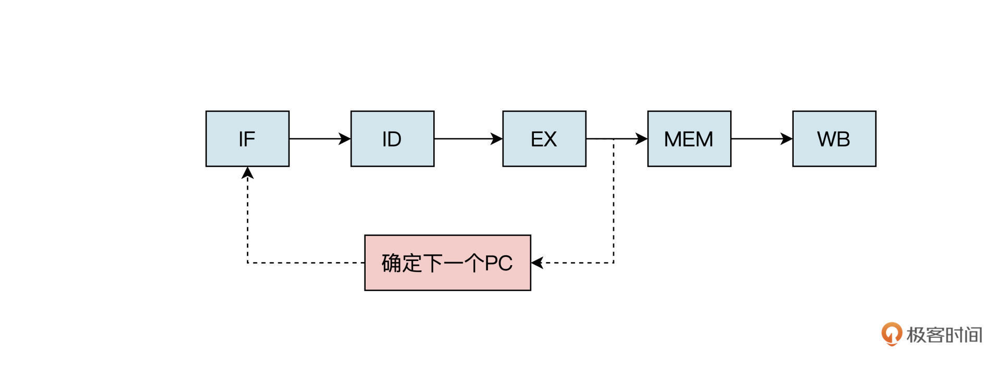
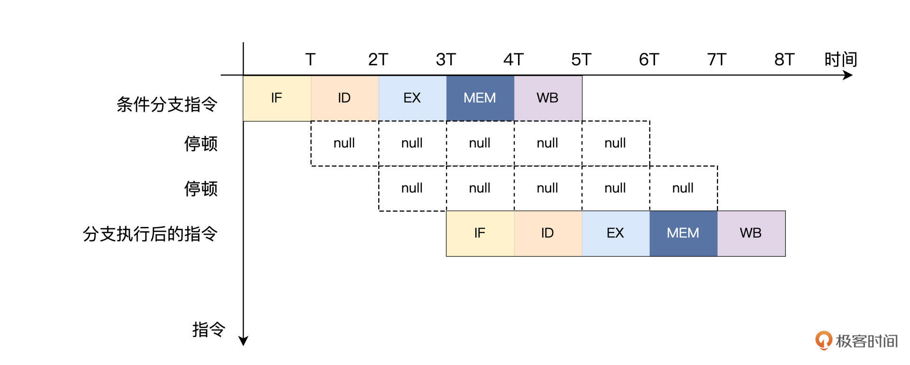
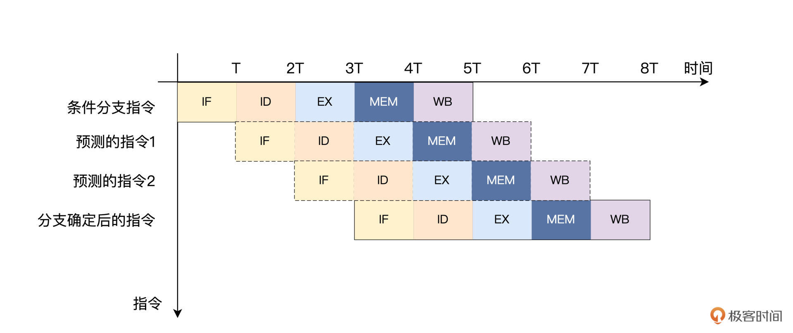
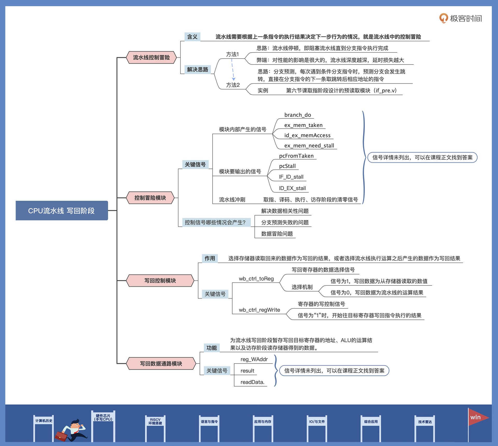

- 00 开篇词 练好基本功，优秀工程师成长第一步.md.html
- 01 CISC & RISC：从何而来，何至于此.md.html
- 02 RISC特性与发展：RISC-V凭什么成为“半导体行业的Linux”？.md.html
- 03 硬件语言筑基（一）：从硬件语言开启手写CPU之旅.md.html
- 04 硬件语言筑基（二）_ 代码是怎么生成具体电路的？.md.html
- 05 指令架构：RISC-V在CPU设计上到底有哪些优势？.md.html
- 06 手写CPU（一）：迷你CPU架构设计与取指令实现.md.html
- 07 手写CPU（二）：如何实现指令译码模块？.md.html
- 08 手写CPU（三）：如何实现指令执行模块？.md.html
- 09 手写CPU（四）：如何实现CPU流水线的访存阶段？.md.html
- 10 手写CPU（五）：CPU流水线的写回模块如何实现？.md.html
- 11 手写CPU（六）：如何让我们的CPU跑起来？.md.html
- 12 QEMU：支持RISC-V的QEMU如何构建？.md.html
- 13 小试牛刀：跑通RISC-V平台的Hello World程序.md.html
- 14 走进C语言：高级语言怎样抽象执行逻辑？.md.html
- 15 C与汇编：揭秘C语言编译器的“搬砖”日常.md.html
- 16 RISC-V指令精讲（一）：算术指令实现与调试.md.html
- 17 RISC-V指令精讲（二）：算术指令实现与调试.md.html
- 18 RISC-V指令精讲（三）：跳转指令实现与调试.md.html
- 19 RISC-V指令精讲（四）：跳转指令实现与调试.md.html
- 20 RISC-V指令精讲（五）：原子指令实现与调试.md.html
- 21 RISC-V指令精讲（六）：加载指令实现与调试.md.html
- 22 RISC-V指令精讲（七）：访存指令实现与调试.md.html
- 23 内存地址空间：程序中地址的三种产生方式.md.html
- 24 虚实结合：虚拟内存和物理内存.md.html
- 25 堆&栈：堆与栈的区别和应用.md.html
- 26 延迟分配：提高内存利用率的三种机制.md.html
- 27 应用内存管理：Linux的应用与内存管理.md.html
- 28 进程调度：应用为什么能并行执行？.md.html
- 29 应用间通信（一）：详解Linux进程IPC.md.html
- 30 应用间通信（二）：详解Linux进程IPC.md.html
- 31 外设通信：IO Cache与IO调度.md.html
- 32 IO管理：Linux如何管理多个外设？.md.html
- 33 lotop与lostat命令：聊聊命令背后的故事与工作原理.md.html
- 34 文件仓库：初识文件与文件系统.md.html
- 35 Linux文件系统（一）：Linux如何存放文件？.md.html
- 36 Linux文件系统（二）：Linux如何存放文件？.md.html
- 37 浏览器原理（一）：浏览器为什么要用多进程模型？.md.html
- 38 浏览器原理（二）：浏览器进程通信与网络渲染详解.md.html
- 39 源码解读：V8 执行 JS 代码的全过程.md.html
- 40 内功心法（一）：内核和后端通用的设计思想有哪些？.md.html
- 41 内功心法（二）：内核和后端通用的设计思想有哪些？.md.html
- 42 性能调优：性能调优工具eBPF和调优方法.md.html
- 先睹为快：迷你CPU项目效果演示.md.html
- 加餐01 云计算基础：自己动手搭建一款IAAS虚拟化平台.md.html
- 加餐02 学习攻略（一）：大数据&云计算，究竟怎么学？.md.html
- 加餐03 学习攻略（二）：大数据&云计算，究竟怎么学？.md.html
- 加餐04 谈谈容器云与和CaaS平台.md.html
- 加餐05 分布式微服务与智能SaaS.md.html
- 国庆策划01 知识挑战赛：检验一下学习成果吧！.md.html
- 国庆策划02 来自课代表的学习锦囊.md.html
- 国庆策划03 揭秘代码优化操作和栈保护机制.md.html
- 温故知新 思考题参考答案（一）.md.html
- 用户故事 我是怎样学习Verilog的？.md.html
- 结束语 心若有所向往，何惧道阻且长.md.html
- 捐赠
10 手写CPU（五）：CPU流水线的写回模块如何实现？
你好，我是LMOS。
今天我们一起来完成迷你CPU的最后一个部分——写回相关模块的设计（课程代码在这里）。
简单回顾一下，上节课我们完成了CPU流水线的访存相关模块的设计。在设计访存模块之前，我们发现流水线中存在数据冒险的问题。为了解决这个问题，我们设计了数据前递模块。
但是我们采用的数据前递模块，只局限于解决算术操作和数据传输中的冒险问题。在CPU流水线中还可能存在结构冒险和控制冒险的问题，我们在进行流水线规划时，已经合理地避免了结构冒险。但是，控制冒险还可能出现，下面我们就来探讨一下流水线的控制冒险问题。
流水线控制冒险
还记得前面我们说过的条件分支指令吗？就是根据指令设置的数值比较结果，改变并控制跳转的方向，比如beq和bne指令。
假如在流水线取出分支指令后，紧跟着在下一个时钟周期就会取下一条指令。但是，流水线并不知道下一条指令应该从哪里取，因为它刚从存储器中取出分支指令，还不能确定上一条分支指令是否会发生跳转。
上面这种流水线需要根据上一条指令的执行结果决定下一步行为的情况，就是流水线中的控制冒险。这时候该怎么办呢？

控制冒险可以使用流水线停顿的方法解决，就是在取出分支指令后，流水线马上停下来，等到分支指令的结果出来，确定下一条指令从哪个地址取之后，流水线再继续。

如上图所示，每当遇到条件分支指令时，流水线就停顿以避免控制冒险。但是这种方法对性能的影响是很大的。因为条件分支指令要等到执行之后的访存阶段，才能决定分支跳转是否发生，这就相当于流水线停顿了2个时钟周期。我们MiniCPU只有五级流水线，就停顿了这么久，像intel 的酷睿 i7处理器流水线，它的深度有十几级，如果也用停顿的方法，那延时损失就更大了。
既然阻塞流水线直到分支指令执行完成的方法非常耗时，浪费了太多流水线的时钟周期。那么，有没有一种方法既能解决控制冒险问题，又不影响流水线的性能呢？
很遗憾，答案是否定的。到目前为止，我们还没有找到根本性的解决控制冒险问题的方法。

但是，这并不代表我们没有办法去优化它，我们可以采用分支预测的方法提升分支阻塞的效率。
具体思路是这样的，当每次遇到条件分支指令时，预测分支会发生跳转，直接在分支指令的下一条取跳转后相应地址的指令。如果分支发生跳转的概率是50%，那么这种优化方式就可以减少一半由控制冒险带来的性能损失。
其实我们[第六节课]取指阶段设计的预读取模块（if_pre.v），实现的就是这个功能，相关代码如下：
wire is_bxx = (instr[6:0] == `OPCODE_BRANCH); //条件挑转指令的操作码
wire is_jal = (instr[6:0] == `OPCODE_JAL) ; //无条件跳转指令的操作码
//B型指令的立即数拼接
wire [31:0] bimm = {{20{instr[31]}}, instr[7], instr[30:25], instr[11:8], 1'b0};
//J型指令的立即数拼接
wire [31:0] jimm = {{12{instr[31]}}, instr[19:12], instr[20], instr[30:21], 1'b0};
//指令地址的偏移量
wire [31:0] adder = is_jal ? jimm : (is_bxx & bimm[31]) ? bimm : 4;
assign pre_pc = pc + adder;
看到这你可能还有疑问，如果条件分支不发生跳转的话又会怎么样呢？这种情况下，已经被读取和译码的指令就会被丢弃，流水线继续从不分支的地址取指令。
要想丢弃指令也不难，只需要把流水线中的控制信号和数据清“0”即可，也就是当预测失败的分支指令执行之后，到达访存阶段时，需要将流水线中处于取指、译码和执行阶段的指令清除。
我先展示一下控制冒险模块的整体代码，之后再详细解读。代码如下所示：
module hazard (
input [4:0] rs1,
input [4:0] rs2,
input alu_result_0,
input [1:0] id_ex_jump,
input id_ex_branch,
input id_ex_imm_31,
input id_ex_memRead,
input id_ex_memWrite,
input [4:0] id_ex_rd,
input [1:0] ex_mem_maskMode,
input ex_mem_memWrite,
output reg pcFromTaken,
output reg pcStall,
output reg IF_ID_stall,
output reg ID_EX_stall,
output reg ID_EX_flush,
output reg EX_MEM_flush,
output reg IF_ID_flush
);
wire branch_do = ((alu_result_0 & ~id_ex_imm_31) | (~alu_result_0 & id_ex_imm_31));
wire ex_mem_taken = id_ex_jump[0] | (id_ex_branch & branch_do);
wire id_ex_memAccess = id_ex_memRead | id_ex_memWrite;
wire ex_mem_need_stall = ex_mem_memWrite & (ex_mem_maskMode == 2'h0 | ex_mem_maskMode == 2'h1);
always @(*) begin
if(id_ex_memAccess && ex_mem_need_stall) begin
pcFromTaken <= 0;
pcStall <= 1;
IF_ID_stall <= 1;
IF_ID_flush <= 0;
ID_EX_stall <= 1;
ID_EX_flush <= 0;
EX_MEM_flush <= 1;
end
else if(ex_mem_taken) begin
pcFromTaken <= 1;
pcStall <= 0;
IF_ID_flush <= 1;
ID_EX_flush <= 1;
EX_MEM_flush <= 0;
end
else if(id_ex_memRead & (id_ex_rd == rs1 || id_ex_rd == rs2)) begin
pcFromTaken <= 0;
pcStall <= 1;
IF_ID_stall <= 1;
ID_EX_flush <= 1;
end
else begin
pcFromTaken <= 0;
pcStall <= 0;
IF_ID_stall <= 0;
ID_EX_stall <= 0;
ID_EX_flush <= 0;
EX_MEM_flush <= 0;
IF_ID_flush <= 0;
end
end
endmodule
首先我们来看看在控制冒险模块中，内部产生的几个信号都起到了怎样的作用。- branch_do 信号就是条件分支指令的条件比较结果，由ALU运算结果和立即数的最高位（符合位）通过“与”操作得到；ex_mem_taken是确认分支指令跳转的信号，由无条件跳转（jump）“或”条件分支指令（branch）产生。
id_ex_memAccess是存储器的选通信号，当对存储器的“读”或者“写”控制信号有效时产生；ex_mem_need_stall信号表示流水线需要停顿，当执行sb或者sh指令时就会出现这样的情况。
然后，再来看看我们这个模块要输出的几个信号。
wire branch_do = ((alu_result_0 & ~id_ex_imm_31) | (~alu_result_0 & id_ex_imm_31));
wire ex_mem_taken = id_ex_jump[0] | (id_ex_branch & branch_do);
wire id_ex_memAccess = id_ex_memRead | id_ex_memWrite;
wire ex_mem_need_stall = ex_mem_memWrite & (ex_mem_maskMode == 2'h0 | ex_mem_maskMode == 2'h1);
pcFromTaken是分支指令执行之后，判断和分支预测方向是否一致的信号。pcStall是控制程序计数器停止的信号，如果程序计数器停止，那么流水线将不会读取新的指令。IF_ID_stall是流水线中从取指到译码的阶段的停止信号。ID_EX_stall是流水线从译码到执行阶段的停止信号。
此外，当流水线需要冲刷时，就会产生取指、译码、执行、访存阶段的清零信号，分别对应着ID_EX_flush、EX_MEM_flush和IF_ID_flush信号。
output reg pcFromTaken, //分支指令执行结果，判断是否与预测方向一样
output reg pcStall, //程序计数器停止信号
output reg IF_ID_stall, //流水线IF_ID段停止信号
output reg ID_EX_stall, //流水线ID_EX段停止信号
output reg ID_EX_flush, //流水线ID_EX段清零信号
output reg EX_MEM_flush, //流水线EX_MEM段清零信号
output reg IF_ID_flush //流水线IF_ID段清零信号
什么情况下才会产生上面的控制信号呢？一共有三种情况，我这就带你依次分析一下。- 第一种情况是解决数据相关性问题。数据相关指的是指令之间存在的依赖关系。当两条指令之间存在相关关系时，它们就不能在流水线中重叠执行。
例如，前一条指令是访存指令Store，后一条也是Load或者Store指令，因为我们采用的是同步RAM，需要先读出再写入，占用两个时钟周期，所以这时要把之后的指令停一个时钟周期。
if(ID_EX_memAccess && EX_MEM_need_stall) begin
pcFromTaken <= 0;
pcStall <= 1;
IF_ID_stall <= 1;
IF_ID_flush <= 0;
ID_EX_stall <= 1;
ID_EX_flush <= 0;
EX_MEM_flush <= 1;
end
第二种情况是分支预测失败的问题，当分支指令执行之后，如果发现分支跳转的方向与预测方向不一致。这时就需要冲刷流水线，清除处于取指、译码阶段的指令数据，更新PC值。
// 分支预测失败，需要冲刷流水线，更新pc值
else if(EX_MEM_taken) begin
pcFromTaken <= 1;
pcStall <= 0;
IF_ID_flush <= 1;
ID_EX_flush <= 1;
EX_MEM_flush <= 0;
end
第三种情况就是解决[上一节课]提到的数据冒险问题。当前一条指令是 Load，后一条指令的源寄存器 rs1和rs2依赖于前一条从存储器中读出来的值，需要把 Load 指令之后的指令停顿一个时钟周期，而且还要冲刷ID _EX阶段的指令数据。
else if(ID_EX_memRead & (ID_EX_rd == rs1 || ID_EX_rd == rs2)) begin
pcFromTaken <= 0;
pcStall <= 1;
IF_ID_stall <= 1;
ID_EX_flush <= 1;
end
解决了流水线的冒险问题，我们才能确保指令经过流水线执行后，得到的结果是正确的，这时候才能把执行结果写回到寄存器。接下来，让我们来继续完成写回阶段的模块设计。
写回控制模块设计
现在我们来到了流水线的最后一级——结果写回。先来看看写回控制模块，这个模块实现起来就非常简单了，它的作用就是选择存储器读取回来的数据作为写回的结果，还是选择流水线执行运算之后产生的数据作为写回结果。
具体代码如下：
module mem_wb_ctrl(
input clk,
input reset,
input in_wb_ctrl_toReg,
input in_wb_ctrl_regWrite,
output data_wb_ctrl_toReg,
output data_wb_ctrl_regWrite
);
reg reg_wb_ctrl_toReg;
reg reg_wb_ctrl_regWrite;
assign data_wb_ctrl_toReg = reg_wb_ctrl_toReg;
assign data_wb_ctrl_regWrite = reg_wb_ctrl_regWrite;
always @(posedge clk or posedge reset) begin
if (reset) begin
reg_wb_ctrl_toReg <= 1'h0;
end else begin
reg_wb_ctrl_toReg <= in_wb_ctrl_toReg;
end
end
always @(posedge clk or posedge reset) begin
if (reset) begin
reg_wb_ctrl_regWrite <= 1'h0;
end else begin
reg_wb_ctrl_regWrite <= in_wb_ctrl_regWrite;
end
end
endmodule
代码里有两个重要的信号需要你留意。一个是写回寄存器的数据选择信号wb_ctrl_toReg，当这个信号为“1”时，选择从存储器读取的数值作为写回数据，否则把流水线的运算结果作为写回数据。另一个是寄存器的写控制信号wb_ctrl_regWrite，当这个信号为“1”时，开始往目标寄存器写回指令执行的结果。
写回数据通路模块设计
和写回的控制模块一样，流水线的最后一级的写回数据通路上的信号也变得比较少了。
写回数据通路模块产生的信号主要包括写回目标寄存器的地址reg_WAddr，流水线执行运算后的结果数据result，从存储器读取的数据readData。
写回数据通路的模块代码如下：
module mem_wb(
input clk,
input reset,
input [4:0] in_regWAddr,
input [31:0] in_result,
input [31:0] in_readData,
input [31:0] in_pc,
output [4:0] data_regWAddr,
output [31:0] data_result,
output [31:0] data_readData,
output [31:0] data_pc
);
reg [4:0] reg_regWAddr;
reg [31:0] reg_result;
reg [31:0] reg_readData;
reg [31:0] reg_pc;
always @(posedge clk or posedge reset) begin
if (reset) begin
reg_regWAddr <= 5'h0;
end else begin
reg_regWAddr <= in_regWAddr;
end
end
always @(posedge clk or posedge reset) begin
if (reset) begin
reg_result <= 32'h0;
end else begin
reg_result <= in_result;
end
end
always @(posedge clk or posedge reset) begin
if (reset) begin
reg_readData <= 32'h0;
end else begin
reg_readData <= in_readData;
end
end
always @(posedge clk or posedge reset) begin
if (reset) begin
reg_pc <= 32'h0;
end else begin
reg_pc <= in_pc;
end
end
assign data_regWAddr = reg_regWAddr;
assign data_result = reg_result;
assign data_readData = reg_readData;
assign data_pc = reg_pc;
endmodule
仔细观察代码，你是否发现和流水线的前面几级的数据通路模块相比，少了两个控制信号呢？- 是的，写回阶段的模块没有了流水线的停止控制信号stall和流水线的冲刷控制信号flush。这是因为写回阶段的数据经过了数据冒险和控制冒险模块的处理，已经可以确保流水线产生的结果无误了，所以写回阶段的数据不受停止信号stall和清零信号flush的控制。
到这里，我们要设计的迷你CPU的五级流水线就基本完成啦。
重点回顾
最后我给你做个总结吧。
这节课我们先分析了流水线中存在的控制冒险问题，也就是当流水线中出现条件分支指令时，下一条指令还不确定从哪里取的问题。最容易想到的解决方案，就是在取出分支指令后，流水线马上停下来，等到分支指令的结果出来，确定下一条指令从哪个地址获取之后，流水线再继续。但是，这里流水线停顿的方式缺点很明显，它会带来很多CPU的性能损失。
于是，我们采用了分支预测的方法，预测每一条分支指令都会发生跳转，直接在分支指令的下一条取跳转后相应地址的指令。如果分支发生跳转的概率是50%，那么这种优化方式就可以减少一半由控制冒险带来的性能损失。
最后，根据整个流水线执行后的数据，我们完成了流水线的最后一级，也就是写回控制模块和数据通路模块的设计。写回控制模块要么选择存储器读取回来的数据作为写回结果，要么选择流水线执行运算之后产生的数据作为写回结果。数据通路模块则包含了写回目标寄存器的地址、ALU的运算结果以及访存阶段读存储器得到的数据。

到这里，我们终于把CPU的五级流水线的最后一级设计完成了，这代表基于指令集RV32I的迷你CPU核心代码设计已经完成。很快就可以让它跑程序了，你是不是很期待呢？下一节课我们就可以看到效果了！
思考题
除了流水线停顿和分支预测方法，是否还有其他解决控制冒险问题的办法？
欢迎你在留言区跟我交流互动，或者记录下你的思考与收获。如果觉得这节课还不错，别忘了分享给身边的朋友，我们一起来手写CPU！
© 2019 - 2023 Liangliang Lee. Powered by gin and hexo-theme-book.